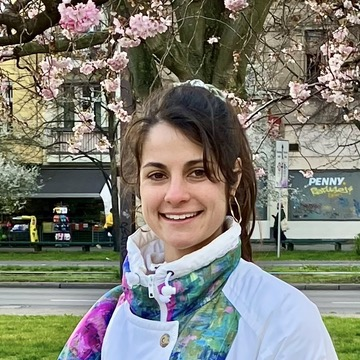

Ségolène Martin
Email
Github
Scholar
CV
I am working as a postdoctoral researcher at TU Berlin (Math+ excellence cluster), in the
image analysis team headed by Prof.
Gabriele Steidl and in collaboration with Prof. Hanno Gottschalk. My current research is at the intersection of optimization and generative learning, with applications to image processing and computer vision.
Prior to that, I was a PhD student in applied mathematics at CentraleSupélec, Université Paris-Saclay,
in the CVN / OPIS Inria team. I did my PhD under the supervision of Prof.
Jean-Christophe Pesquet (CVN, CentraleSupélec) and Prof.
Ismail Ben Ayed (ILLS, ETS Montréal). I defended my thesis
Variational methods for large scale data problems in imaging on January 26th, 2024 (dissertation here).
Research interests
- Large-scale continuous optimization
Majoration-Minimization, proximal algorithms, subspace acceleration, convergence theory - Inverse problems for imaging
Image restoration and reconstruction in the Bayesian framework - Generative learning
Flow-based models, GANs, VAEs - Image classification
Clustering and few-shot optimization-based methods, unbalanced few-shot, transductive learning, text-vision models
Education
- PhD in Applied Mathematics, 2020-2024
CentraleSupélec, Université Paris-Saclay - Master in Mathematics, Vision and Learning (MVA), 2019-2020
École Normale Supérieure Paris-Saclay - Agrégation in Mathematics, 2018-2019
École Normale Supérieure Paris-Saclay - Bachelor's Degree in Fundamental Mathematics, 2016-2017
École Normale Supérieure Paris-Saclay